Le Geste
Centrer la boule, monter la paroi, rentrer la pièce. Chaque objet répète un geste hérité, sans en oublier un trait — la main garde la mémoire.
Atelier céramique — Antananarivo, rue du Rova
Depuis 2018, l'atelier Tanika tourne, façonne et cuit des céramiques contemporaines avec l'argile des Hautes Terres. Rue du Rova, rien ne se presse : de la boule de terre au four, chaque pièce garde le geste qui l'a faite.
La maison
En 2018, Mialy Raharijaona rentre à Antananarivo après sept ans à Limoges, où elle a appris le tour, la glaçure et la discipline du feu. Au lieu d'ouvrir un atelier dans la ville où elle a étudié, elle choisit la rue du Rova, à Faravohitra, et pose une règle que l'atelier n'a jamais quittée : acheter l'argile aux potiers des Hautes Terres, tourner chaque pièce à la main, la laisser sécher lentement, la cuire deux fois.
Huit ans plus tard, la règle est intacte. Les pièces de Tanika posent leurs côtes rondes sur les tables, les étagères et les terrasses de la capitale — jamais deux identiques, toujours le même soin. L'atelier n'a pas vieilli. Il patine.
« La terre ne ment pas. »
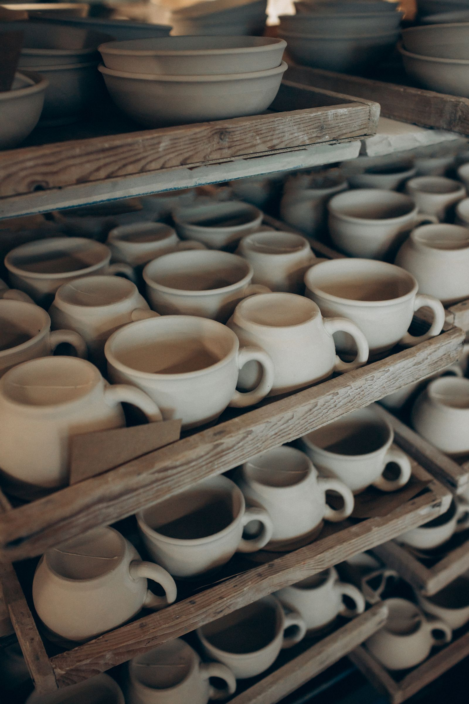
Centrer la boule, monter la paroi, rentrer la pièce. Chaque objet répète un geste hérité, sans en oublier un trait — la main garde la mémoire.
L'argile se repose trois jours, sèche une semaine, cuit deux fois. Nous ne raccourcissons aucune de ces étapes : le feu ne se rattrape pas.
Nous connaissons nos potiers par leur nom. Entre la carrière et l'atelier, la chaîne reste courte, et la marchandise se transmet de parole en parole.
Le savoir
Chaque matin, l'argile arrive des Hautes Terres déjà assouplie par un repos de trois jours. La main la centra sur le tour, monte la paroi, la finit à la dernière eau — puis la pièce sèche en silence, attend le four, et reçoit deux cuissons.
De la carrière à la pièce finie, le parcours de l'argile tient en quatre étapes, et chacune a son heure.
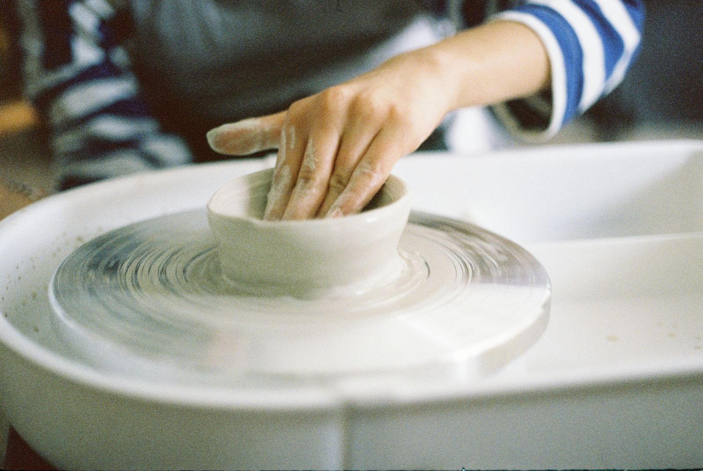
Argiles tracées achetées en direct aux potiers des Hautes Terres. Repos trois jours, malaxage, assouplissement : la terre doit vouloir se prêter.
Centrage, montée, colombin pour les grandes pièces. Sans moule, sans standard : chaque pièce suit l'argile qui croît sous les doigts.
La pièce respire sur l'étagère, séchant lentement, à l'abri du courant. Nul ne la touche avant qu'elle ne soit devenue du son.
Biscuit puis glaçure, jusqu'à 1 250 °C. Entre les deux feux, la pièce apprend ce qu'elle sera — et le four garde le dernier mot.
La boutique
Les pièces quittent l'atelier estampillées du sceau de Tanika, posées sur du papier de soie. On les trouve au comptoir de la rue du Rova, ou livrées dans la semaine, à votre porte, soigneusement emballées pour le voyage.
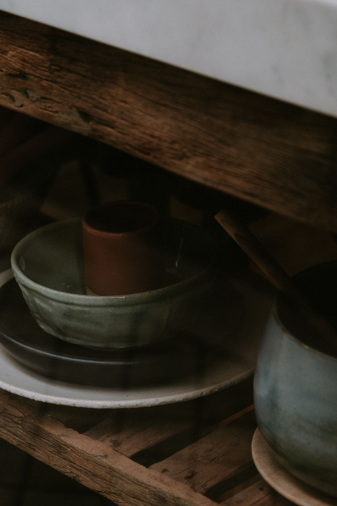
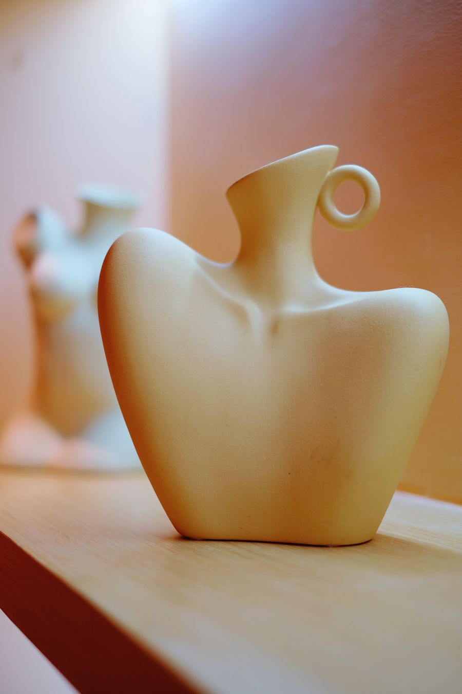
Tourné dans l'argile blanche de Behenjy, glaçure mate, pied nu. Hauteur 32 cm, signé au fond.
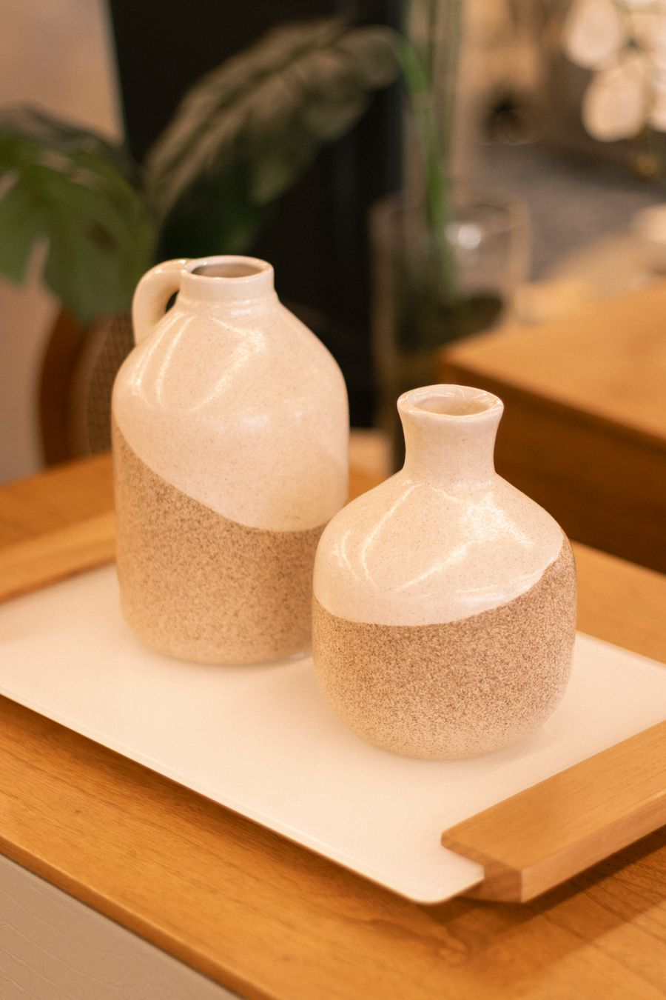
Deux vases sortis de la même main, tournés au même souffle — jamais deux fois pareils. Hauteur 24 cm chacun.
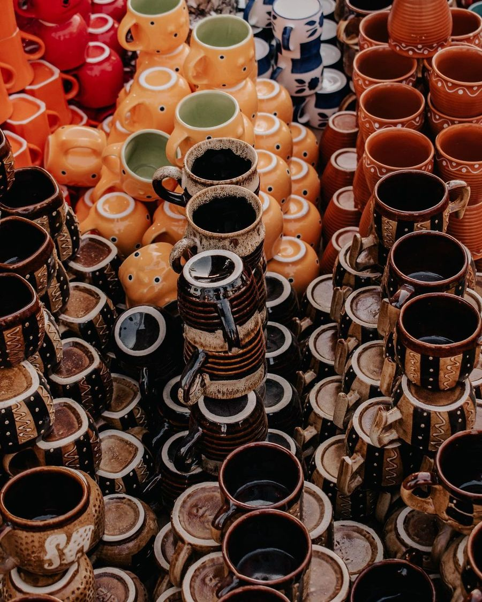
Six bols, six tasses et un plat, émaux de terre assemblés sur le tour. Le service complet de l'atelier, pour six convives.
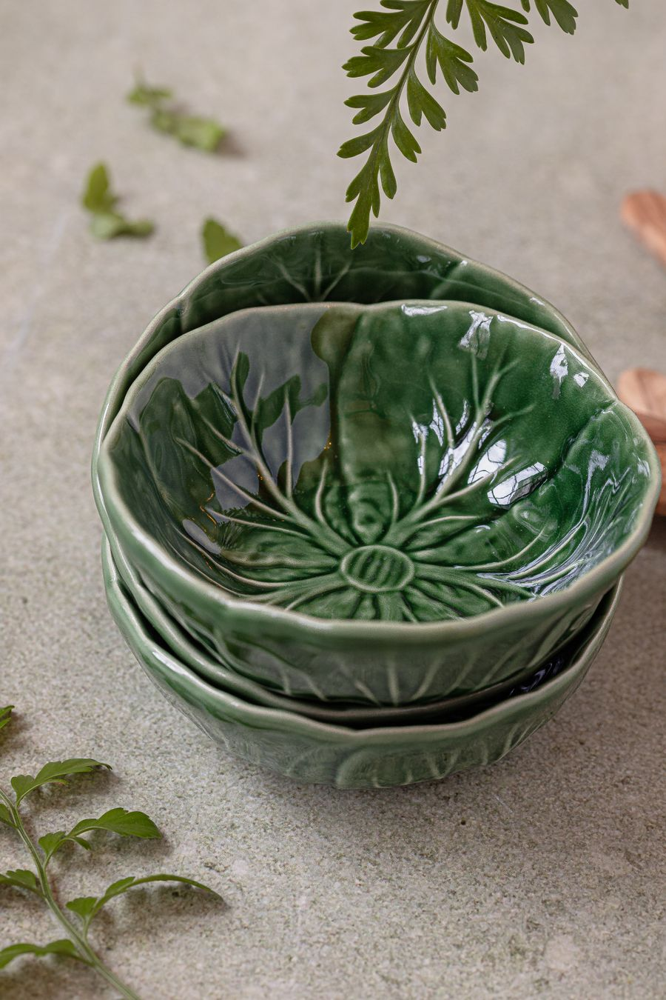
Bols empilables dans l'argile grise d'Androvakely, engobe vert de cendre. Pour le riz, les épices, les sauces du jour.
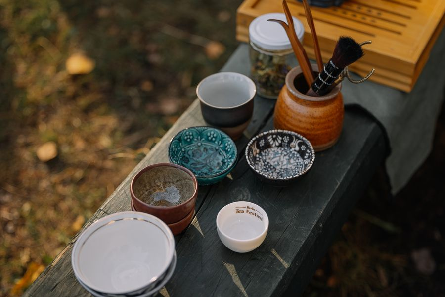
Tasses à thé rustiques, glaçure cendrée, marques du feu de bois. Chaque tasse garde la couleur de sa cuisson.
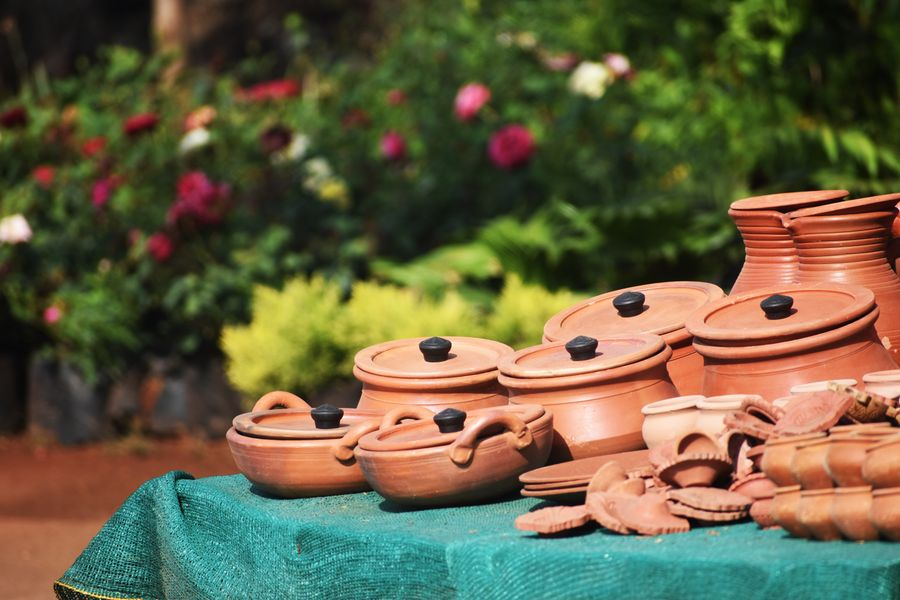
Pots de terrasse en terre cuite d'Ambatomainty, séchage lent, barbotine de finition. Pour les plantes et les patios.
150 000 Ar
Un vase de 25 cm et un bol, au choix. La porte d'entrée de l'atelier, sans engagement, emballés dans le papier de soie de la maison.
Commander420 000 Ar
Le service Antsirabe complet, six couverts, livré en priorité : la table de la maison, dressée une fois pour toutes.
Commander780 000 Ar
Une pièce d'exception numérotée sur trente, signée au fond, souvent une terre rare ou une glaçure de saison.
CommanderCadeaux d'affaires, hôtels, événements : coffrets sur mesure · Livraison à Antananarivo sous 48 h, expédition vers toutes les régions · Paiement à la commande, retrait possible à l'atelier.
Ateliers & initiations
L'atelier ouvre ses tours et sa table de travail : on y vient pour acheter, mais on y vient aussi pour sentir la terre monter entre ses mains. Trois rendez-vous, trois façons d'entrer dans le métier.
Centrer une boule, la creuser, la laisser monter. Deux heures et demie de tour, chacune guidée — la première pièce part avec vous. Six places seulement.
S'inscrireLe colombin, la plaque, les pouces : les enfants et leurs parents façonnent ensemble un bol ou une maisonnette. Une après-midi les mains dans la terre.
S'inscrireL'atelier se ferme pour votre groupe : initiation, concours de bols, cadeau commun. Anniversaires, sorties d'équipe, ateliers d'entreprise.
S'inscrire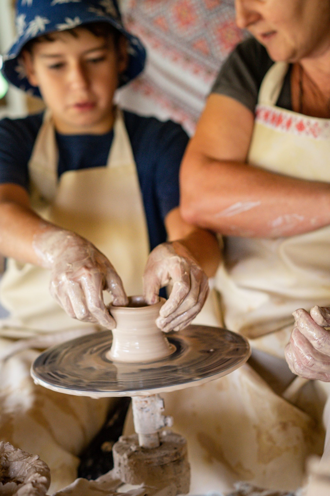
Questions de l'atelier
Chaque pièce est tournée à la main, sans moule. Les glaçures sont mélangées en petite quantité et les cuissons varient d'un four à l'autre : la main et le feu ne se ressemblent jamais deux fois. C'est la signature de l'atelier, non un défaut.
De quatre terres des Hautes Terres achetées en direct aux potiers de Behenjy, d'Ambatomainty, d'Androvakely et des rives du lac Itasy, au prix juste et sans intermédiaire.
Le samedi matin, une initiation au tour de 9h30 à 12h ; le mercredi après-midi, un atelier de modelage pour les enfants et leurs parents ; l'atelier se privatise aussi pour les groupes de huit à seize personnes.
Les ateliers sont limités à six places pour que chacun soit guidé. Comptez trois jours pour l'initiation, et deux à trois semaines pour une privatisation.
Nous livrons à Antananarivo sous 48 heures et expédions vers toutes les régions de Madagascar ainsi qu'à l'étranger, dans un emballage pensé pour le voyage — papier de soie, carton et calage.
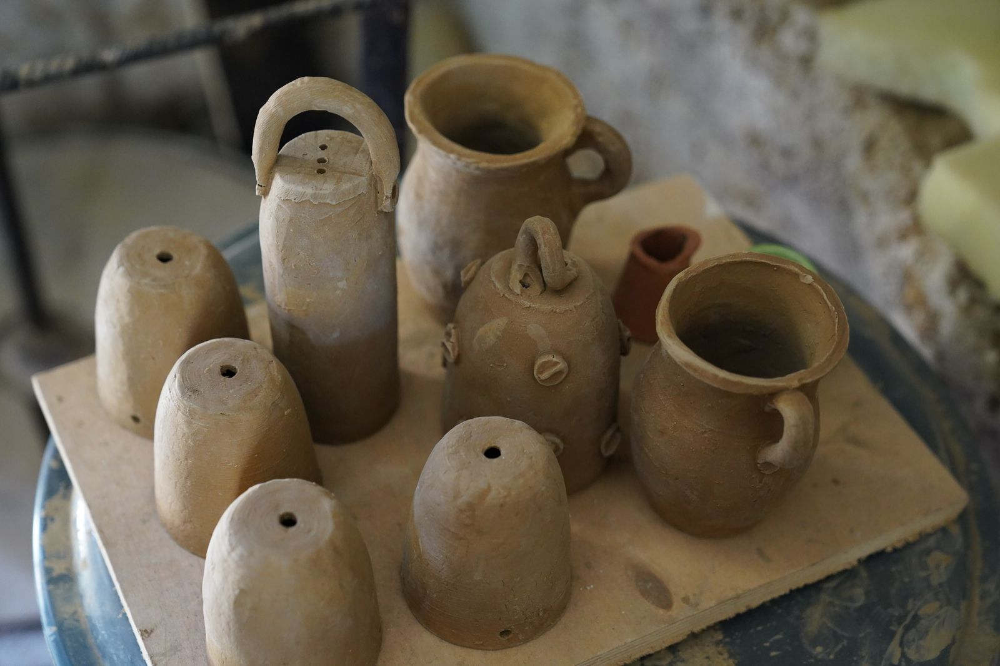
Venir & nous écrire
Taxi-be ligne 114 · Analakely → Faravohitra, arrêt Rova
Bus 30, 45 — à 10 min à pied du lac Anosy
Réservations, coffrets, privatisation : écrivez ou appelez, réponse sous un jour ouvré.